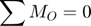
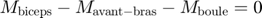

Problème 2/40, Meriam p. 45

Contents
Étape 1 – Démarche vectorielle
Le produit vectoriel est M = r × F.
Déterminer un vecteur r ayant comme origine le point O et se terminant au point d'application de la force.
clear; close all; clc angle = -90+55; % selon la convention de atan2 % Pour la force de 5 lb roG = 6*[cosd(angle), sind(angle) 0]; % po % Pour la force de 8 lb roH = [13, 0, 0]; % po mF5_lb = 5; mF8_lb = 8; nF5_lb = [0, -1, 0]; F5_lb = nF5_lb*mF5_lb; nF8_lb = [0, -1, 0]; F8_lb = nF8_lb*mF8_lb; Mo_5_lb = cross(roG, F5_lb); Mo_8_lb = cross(roH, F8_lb); SommeMo = Mo_5_lb+Mo_8_lb; Norme = norm(SommeMo); fmt = ' = %+6.1fi %+6.1fj %+6.1fk '; fprintf([' roG',fmt,'po\n'],roG); fprintf([' F5_lb',fmt,'lb\n'],F5_lb); fprintf(['Mo_5_lb',fmt,'lb·po\n\n'],Mo_5_lb); fprintf([' roH',fmt,'po\n'],roH); fprintf([' F8_lb',fmt,'lb\n'],F8_lb); fprintf(['Mo_8_lb',fmt,'lb·po\n\n'],Mo_8_lb); fprintf(['sommeMo',fmt,'lb·po\n'],SommeMo);
roG = +4.9i -3.4j +0.0k po
F5_lb = +0.0i -5.0j +0.0k lb
Mo_5_lb = +0.0i +0.0j -24.6k lb·po
roH = +13.0i +0.0j +0.0k po
F8_lb = +0.0i -8.0j +0.0k lb
Mo_8_lb = +0.0i +0.0j -104.0k lb·po
sommeMo = +0.0i +0.0j -128.6k lb·po
Étape 2 – Expression scalaire
Norme = norm(SommeMo); fprintf('Norme Mo = %.1f lb·po',Norme); MomentPositif = SommeMo(3) > 0; % variable logique if(MomentPositif) fprintf(' dans le sens antihoraire\n'); else fprintf(' dans le sens horaire\n'); end % T est parallèle et de sens opposé aux deux % forces de 5 et 8 lb. % % Force * bras de levier = moment T = Norme/2; fprintf('\nNorme T = %.1f lb\n',T);
Norme Mo = 128.6 lb·po dans le sens horaire Norme T = 64.3 lb
Démarche scalaire (ajout)
Poser le système des axes x et y au point O. Calculer le moment de chaque force. Noter qu'il n'y a pas de composante en x.


clear; close all; clc OG = 6; CG = OG*sind(55); % po (bras de levier) BA = 13; % po (bras de levier) Mo_5_lb = CG * 5; % lb·po (sens horaire) Mo_8_lb = BA * 8; % lb·po (sens horaire) SommeMo = Mo_5_lb + Mo_8_lb; % lb·po, horaire T = SommeMo/2; % lb fprintf('Somme des Mo = %.1f lb·po',SommeMo); fprintf(' dans le sens horaire\n'); fprintf('\nNorme de T = %.1f lb',T);
Somme des Mo = 128.6 lb·po dans le sens horaire Norme de T = 64.3 lb